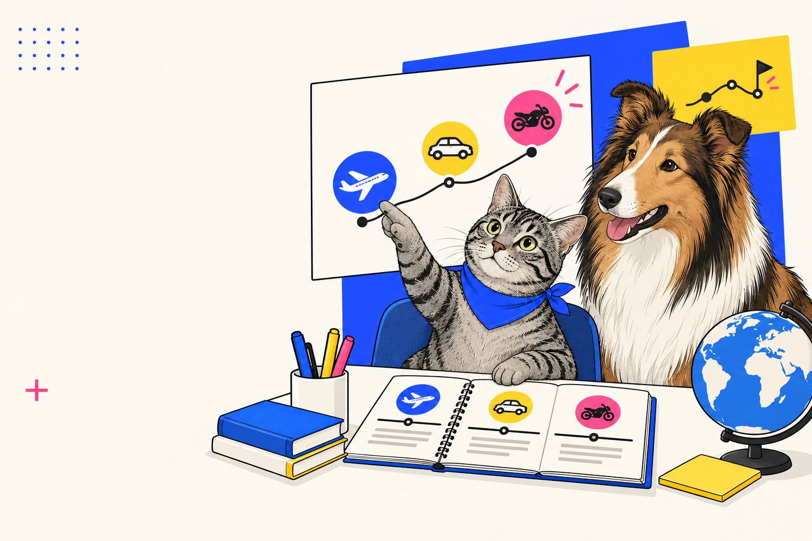

READY FOR TAKE-OFF?
Seven flight missions. School words, numbers, introductions, to be, articles, reading, listening and lots of speaking. Complete challenges, collect stars and earn your pilot badge.

Your destination: confident school English.
Not a textbook copy. The unit language is rebuilt into short challenges, retrieval games and real mini-conversations.
talk about school subjects and objects • say your age • introduce yourself • ask and answer with to be • greet people naturally • understand a short school text and audio • compare school life.
THE SCHOOL HANGAR
1A • school subjects + objects + days + a/an
Load the right words
Tap only school subjects.
Repair the labels
A or AN?
a + consonant sound → a ruler
an + vowel sound → an atlas
30-second cockpit challenge
Look around. Name 5 school objects. Use It’s a/an…
Then ask your tutor: What’s this in English?
Need a hint?
Days in turbulence
Put the days back into flight order. Type the missing days.
Monday → → Wednesday → → Friday → → Sunday
BOARDING GATE
1B • numbers 11–20 + introductions
Decode the boarding passes
Which number did you hear?
Press a speaker. Listen to the number, then choose it.
Gate D: new student
Max: It’s in Room D. Are you new to the school?
Leo: Yes, I am. My name’s Leo. What’s your name?
Max: I’m Max. Nice to meet you. How old are you?
Leo: I’m eleven. And you?
Max: I’m twelve. Let’s go to science together.
Meet your co-pilot
Use: Hi, I’m… / What’s your name? / How old are you? / Nice to meet you.
Round 1: you are the new student. Round 2: switch roles. Round 3: close the model and do it from memory.
Your boarding card
GRAMMAR FLIGHT DECK
Personal pronouns + verb to be
Who is who?
I → am
he / she / it → is
you / we / they → are
Negative: am not / isn’t / aren’t
Why do we say She is 12, but They are 12? Explain the pattern to your tutor.
Choose the correct system
Fix TO BE
Mayday! Find 3 errors
I is twelve. My friend Max are thirteen. We is in Class 5A.
Check
Rapid-fire interview
Your tutor asks 6 questions. Answer without reading: Are you 11? Are you in Year 5? Is English your favourite subject? Is your school big? Are your friends in this school? Are you tired today?
Then ask your tutor three Are you…? questions. Full sentences only.
SUBJECT RADAR
1C • reading + listening + favourite subjects
Merton School profile
Before reading: What information do you expect on a school subject form?
School: Merton Secondary School
Subjects: Maths, English, Geography, Science, Art
Favourite subject: Art
Post-reading: What is the same about you and Tony? What is different?
Flight 5C announcement
1) Before listening: guess the room and favourite subject. 2) Listen twice. 3) Check.
Subject ranking
Rank: English • Maths • PE • Science • Geography • History • Art.
Say your top 3: My favourite subject is… I like… I don’t really like…
Tutor follow-up: Why?
Fix the flight log
my name is leo. i am from russia. english is my favourite subject. on monday i have maths and art.
Check
CULTURE ROUTE: ENGLAND
School stages • age • compare, don’t stereotype
Match age to school stage
This simplified route follows the school-stage labels used in the unit; individual education routes can vary.
England ↔ your school
Use these starters:
In the unit, students aged 11–16 are at…
In my school…
One thing that is similar is…
One difference is…
Where do they go?
Fiona is 13. Tim is 9. Betty is 17. Say a full sentence for each: Fiona is thirteen. She is at secondary school.
Extra challenge: ask your tutor What school were you at when you were 13?
ENGLISH RADIO
Greetings + pronunciation + listening + speaking
Choose the greeting
Listen, notice, copy
/eɪ/ name, same, later
/æ/ am, Maths, bag
/θ/ thanks, Thursday, think
Copy each set twice. Which sound is hardest?
Match the situation
When is it probably happening?
Three radio calls
Act out three 15-second dialogues:
① arriving at school in the morning
② meeting a friend after lunch
③ leaving school
Round 2: do all three without looking at the phrases.
FINAL FLIGHT CHECK
Retrieval • integrated skills • final speaking
Vocabulary scramble
Grammar clearance
60 seconds. No script.
Introduce yourself and talk about your school. Include:
your name • age • class • 3 school subjects • favourite subject • 2 objects in your bag • one day in your timetable • a greeting + goodbye
Then answer two surprise questions from your tutor.
Can you fly solo?
Say one thing you can now do:
One thing I still want to practise:
Your collected skills
★★★★★
Reach 25+ stars and award yourself the Unit 1 Pilot Badge.
YOU’RE CLEARED
FOR UNIT 2.
Stars collected: 0. The goal isn’t perfect answers on the first try. It’s being able to use the language without the screen.